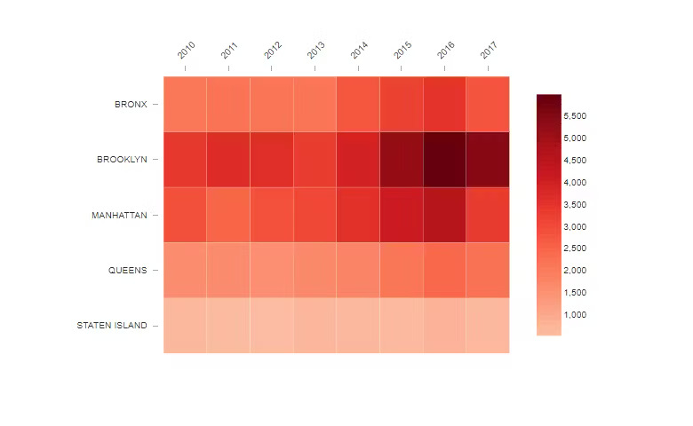
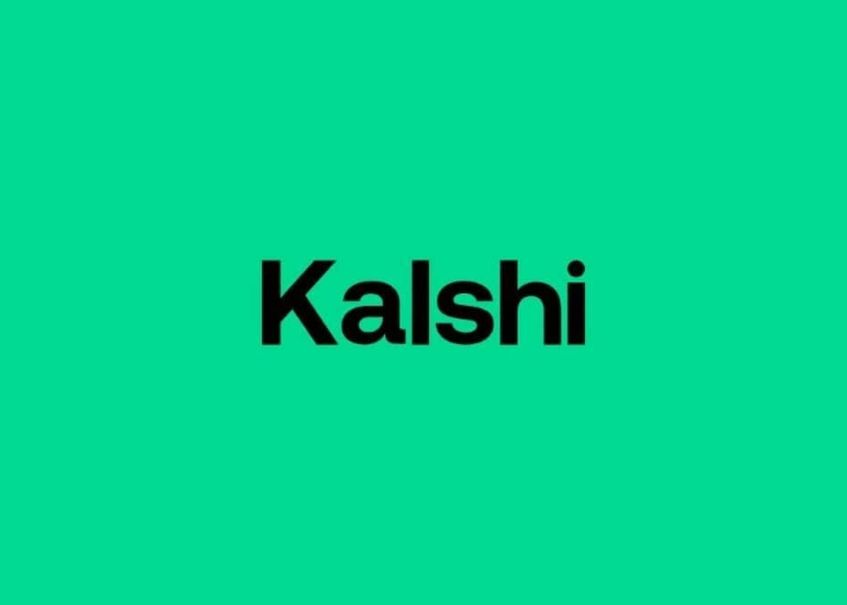

Grigory Shatalin
Software Engineer
Academic & Work Projects
BuffAI is a full-stack AI-powered web application designed to streamline personalized fitness coaching and workout planning. Built with JavaScript on the frontend using Handlebars templating and Python on the backend with a RESTful API architecture, BuffAI integrates large language models to generate customized workout routines based on a user's goals, fitness level, and available equipment. The project demonstrates end-to-end full-stack development with real AI integration — handling prompt engineering, API orchestration, and responsive UI design. BuffAI began as a hackathon concept and evolved into a complete, deployable application with user sessions and persistent workout history.

This open-source contribution to Microsoft's Power BI custom visuals repository focused on enhancing the heatmap data visualization component used by enterprise analysts worldwide. The work involved improving rendering performance for large datasets, resolving edge-case bugs in data mapping logic, and expanding configuration options to give Power BI report authors more granular control over color scales and bucketing. Contributing to a codebase governed by Microsoft's engineering standards required careful adherence to review processes, test coverage expectations, and backward compatibility constraints — a valuable exercise in navigating large production codebases and collaborating with a distributed open-source team.

KalshiNFL is a data analytics and market tracking tool built on top of Kalshi's regulated prediction markets API, focused specifically on NFL game outcomes. The tool aggregates real-time market odds, tracks position movements across contracts, and visualizes pricing data to surface potential inefficiencies between different game markets. Built as a personal project to explore the intersection of sports analytics and financial market microstructure, KalshiNFL reflects a genuine interest in quantitative data analysis and the emerging category of regulated event contracts. The project required deep engagement with Kalshi's API documentation, real-time data pipelines, and data visualization design.